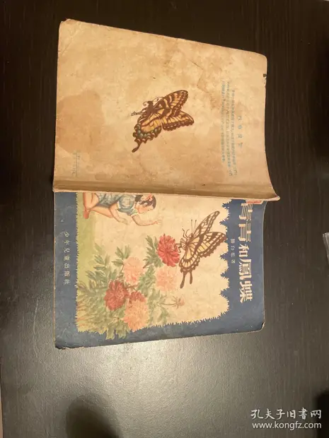

青青和鳳蝶
访问原网页 ↗Visit original website ↗

S259 · 滕白也著、绘图；赵白山装帧；少年儿童出版社 · 1956-08
滕白也写给儿童的自然科学读物，借女孩青青与凤蝶的对话介绍昆虫。版权页明确署滕白也著、绘图，赵白山装帧。少年儿童出版社于1956年8月初版初印，印数45,000册。A children’s science book framed as conversations between a girl and a swallowtail butterfly. The colophon credits Teng Baiye with text and illustrations and Zhao Baishan with book design. The Shanghai children’s publisher issued the first edition and first printing in August 1956, in a run of 45,000.
馆藏图像与原文Archived images and documents
- 《青青和凤蝶》1956年初版封面和封底Front and back covers of Qingqing and the Swallowtail I245
- 《青青和凤蝶》目录及牡丹凤蝶彩页Contents and a colour plate of a swallowtail on a peony I246
- 《青青和凤蝶》第一节首页First page of Qingqing and the Swallowtail I247
- 《青青和凤蝶》蝶翅脉络图（第9页）Diagram of veins in a butterfly wing, page 9 I248
- 《青青和凤蝶》蜻蜓、螳螂和木叶蝶彩页Dragonfly, praying mantis and leaf butterfly I249
- 《青青和凤蝶》著绘署名及初版版权页Colophon and first-printing details I250


来源页摘录Source-page excerpt
老版儿童文学 青青和凤蝶（56年一版一印）_滕白也_孔夫子旧书网
作者：滕白也 出版社：少年儿童出版社 出版时间：1956-08 开本：28开 印刷时间：1956-08 印数：…
原始网址Original URL
https://book.kongfz.com/25367/9981709436/